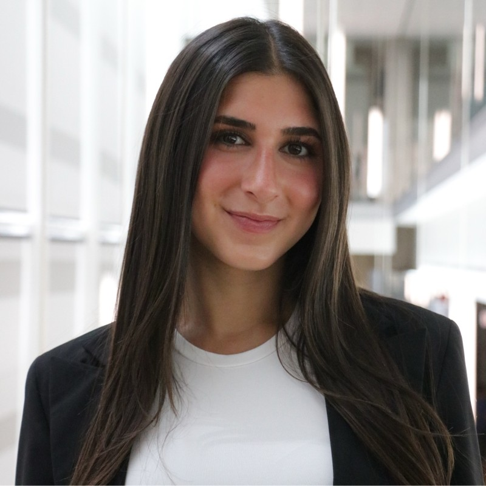
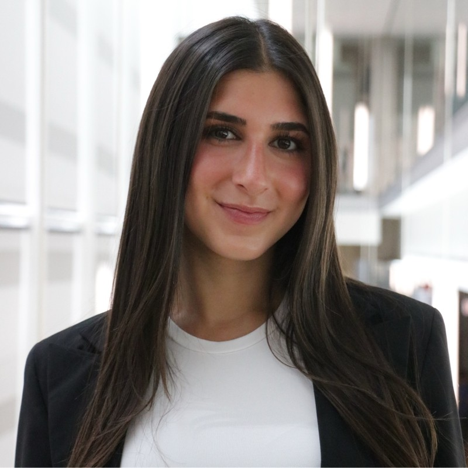

VPS Interview: AI in Creative Fields 👩💻
Interview conducted by me, Charlotte Newhouse 💁♀️
Overview: I interviewed two college students on their
opinions and predictions for AI in creative fields.
I specifically sought out two people who's general
opinions differed from our discussion in class
last week so that I could get various perspectives
on the topic.
Meet the Interviewees:
 

Jordana (Left) and Mikaila (Right)
Jordana is a sophomore at WashU and studies in
Sam Fox School of Art and Design. Her major
is Pre-Med and Studio Art
Mikaila is a sophomore at the University of Michigan and studies in
the Ross School of Business. Her major
is Economics.
Interview:
1: Background and Context
Can you briefly introduce yourself and describe what kind of work you do?
Jordana
I’m Jordana. I’m a student at Sam Fox School
of Art and Design at WashU. I'm a studio
art major. I mainly focus on painting and
drawing- I have little experience with digital
art.
Mikaila
Hi my name is Mikaila and I’m an economics major at University of Michigan with a minor in quantitative methods and the social sciences. It’s like data analytics and statistics.
How did you first get into this field?
Jordana
I've been painting since I was in 7th grade and I really enjoyed it, so I decided to apply to art school.
Mikaila
I decided to join the Michigan Woman Investment Group. I’m now vice president of mentorship and through this club, I have had the opportunity to speak to many upperclassmen and alumni that work in markets and work in sales and trading and I realized how much I love meeting and talking with new people. I began following the news and I began to realize how real and dynamic the market is, which made me very drawn to it. I'm now looking to apply to a job in the field of sales and trading. I love how it’s fast paced.
What does your day-to-day creative process usually look like (if at all)?
Jordana
I go to art class on Tuesdays and Thursdays and have studio time. I'm taking painting and photography this semester.
Mikaila
I've had to speak to hundreds of people from different backgrounds, different personalities, different cultures and I have had to train myself how to make meaningful connections with them in creative ways.
2: First Encounters with AI
When did you first become aware of AI tools being used in your field (if at all)?
Jordana
Not at all. I’ve never had to use AI in my field. People do, but I don't necessarily know or understand how they do.
Mikaila
It isn't really used to replace what we do in a market-facing role, it’s more used to promote productivity, and yeah- not having to rely on people to do busy work is nice. Humans do the real work.
Have you personally used AI tools (like image generators, design assistants, or just to ask questions)? Why or why not?
Jordana
No, I have never used it because I wouldn’t really, I don’t know where I'd implement it because I paint what I see. But I get how people would wanna use it to create reference photos.
Mikaila
I have used AI tools. I think AI is an exceptional resource to use to explain complex topics and I especially use it now to teach myself new things. In recruiting there are terms I'm not familiar with and I use AI to help explain them to me.
Me
Do you believe there is nothing else you can use to explain/learn?
Mikaila
I used to resort to Google but now there's also Google Gemini. Also Ii uses sources from all over the web to formulate its answers so instead of using 1 link you can use AI to understand hundreds of different answers across the internet in seconds.
What was your initial reaction to AI: curiosity, excitement, fear, skepticism?
Jordana
A little bit of fear but also like, woah this is really cool
Me
Why is that?
Jordana
It's impressive that it can do so much - creating something from nothing. But it's like scary that a computer could do so much
Mikaila
I think it’s very helpful, for the reasons I said before.
3: AI & Creative Labor
Do you think AI is taking over creative jobs, or just changing how creative work is done?
Jordana
I think it's changing how creative work is done- for example, photography didn't take over painting, it just changed it. It gave a different type of appreciation for painting. You can use it to learn how to improve your art. Things are never gonna go away, they're just going to change.
Mikaila
I think they're mostly just changing how people work with them and people need to find ways to use it to not replace what people do, but help instead
Me
Well, can I give you an example? This past year, Coca-Cola, a billion dollar brand, used AI to make their christmas ad. They have the funds to pay artists but instead used AI.
Mikaila
Umm - I wouldn't call that [referring to Coca-Cola’s AI ad] money grabbing, I'd call it efficiency within the company. They're using their resources and money they have in alternative ways- AI can do this for free so now they can use their money for alternative things, like for example, producing more products.
Which parts of creative work do you think are most vulnerable to AI?
Jordana
Coding, UI/UX, graphic design. Honestly I don’t know what else. People who are supposed to do busy work no longer have to do those types of jobs anymore.
Mikaila
Definitely like, visual art graphics, like AI can now produce many things, like, and, those people need to find different jobs. The world is developing, things will change, as a society we need to learn to change with that as well. We can’t just say this sucks because it's replacing my job. We need to use it to help ourselves. In 50 years nothing will be working the same- evolution is key.
Do you think AI devalues creative labor, or does it expose how much work actually goes into something that we maybe never thought about?
Jordana
(silence). Huh? Can we skip this question. Haha.
Mikaila
I don't think you can put that characteristic on AI - AI isn’t a person and doesn’t have emotions, it's not trying to take away jobs, it's the humans putting it in AI that are devaluing these people. I wouldn’t even consider it devaluing because they're just evolving with society. These people getting replaced are the ones that aren't evolving.
4: Originality, Prompts, and Authorship
If an artist or designer uses AI prompts, who do you think the “author” of the work is?
Jordana
It depends how much they implement what AI spits out. What determines that? Depends if you consider art the idea or the actual labor. I think it’s both so maybe you should credit AI. AI that doesn't take away the fact that you did stuff as well.
Mikaila
I think both. Is the designer also contributing? If they're also contributing then it's both. They should be mutually accounted for.
Do you think using AI tools makes creative work less original, or just original in a different way?
Jordana
Original in a different way- because you're the one who came up with the prompt. You are taking what it's spitting out to help you with something you're going to do yourself.
Mikaila
I think it makes things original in a different way bc AI also has copyright restrictions. It can't just pull up a pic of Picasso. It's using shapes and designs from other pieces to make a piece of original artwork– which is what artists do. AI takes inspiration- so do humans.
How do you personally define originality in an era where everything is remixing existing material?
Jordana
It depends if you're repurposing/changing it into something new or seriously just taking what's given on the screen.
Mikaila
It's the same thing as what do you [Charlotte, the interviewer] like to do, what is it, collaging? Collaging is still considered an original piece of work even though its made of other things that weren’t made from scratch from the artist.
5: Skills, Labor, and the Future of Work
Do you think creative jobs are becoming more about technical skills rather than intellectual or conceptual thinking?
Jordana
No, I think it’s the opposite, it's more about thinking. AI does the technical, we do the creative. AI helps us go further.
Mikaila
Um. I think it's a combo of both. Even through interviews I've been asked ways in which I can utilize AI and technology to improve my work
Some people argue that only physical labor jobs will remain “necessary” in the future- how do you respond to that?
Jordana
Uh, No! I would say that doctors and lawyers are jobs that could never be taken by AI- lawyers are too far for AI in my opinion. You need a person doing those things- listening and deciding. I don’t think AI could do that.
Mikaila
That's not true at all, like, what? Like construction workers? Bro, think of the amount of jobs. Everything in this world is a job. There are so many professions that are so beyond technology and can't be replaced
Like what I'm doing: sales and trading. I'm the person keeping up with client relationships. AI can't keep up relationships. And that's the bare minimum of examples. So many jobs involve human interaction and AI just can't replace that. Human interaction just can't be replaced.
6: Ethics, Power, and Designs
Jordana
Who do you think benefits the most from AI in creative industries: workers, companies, or audiences?
Companies because they are the ones making the profit.
Mikaila
All 3. One, worker benefits because he doesn't have to do the long brutal tasks and his assignments are now done more efficiently. Two, companies benefit because workers are producing things at a faster rate, which saves them time and money. And three, consumers benefit because supply increases. Whatever the company is producing is going out to consumers at a faster rate.
Are there ethical lines you think designers or artists should not cross when using AI?
Jordana
I don’t know. I feel like I may not be fit to answer this question.
Mikaila
Yeah, like obvi! A designer shouldn't be plugging in ‘create a painting that looks like Picasso’. I don’t know how to explain it. They just can't be using AI to like, they can’t use AI to straight up copy the work of other people and claim it as their own. They should use AI to help create their work more efficiently, not make the work itself and slap on their name.
7: Closing
Has AI changed the way you think about your own creative identity?
Jordana
No, but that may be because I haven’t used it.
Mikaila
Um, no. Not really. I don’t do art. And I don’t think AI can replace a person's identity. How can it replace who I am? Identity is not the right world.
What advice would you give to students entering creative fields right now?
Jordana
Ummm. Learn how to use AI but that doesn’t mean you need to. Learn what it has to offer. I’m even curious how it could be helpful even though I haven’t tried it. Maybe I will at some point.
Mikaila
There is so much room to enter creative fields. What I've been saying is you shouldn’t worry about AI taking over what you are doing, instead figure out how to utilize it - that will make you stand out as a candidate, as well. Companies will inevitably integrate AI, so might as well get with the program and get ahead!
Do you feel hopeful, anxious, or conflicted about the future of creative work—and why?
Jordana
I feel conflicted because I don't know where it's gonna go. Maybe it will go well.
Mikaila
I'm more excited. I'm excited to see how people change the way they do things to work with AI. We're still in the beginning years. In a few years people will start to find ways of how to use it in the work force. It'll be cool to see how people use and benefit
Thank you to Jordana and Mikaila for taking the time to be interviewed and for their thoughful feedback.
If you would like to do more research on AI, you can visit the following links:
And, thank you classmates for supporting my website!💋